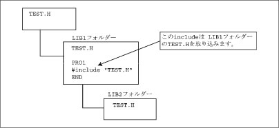
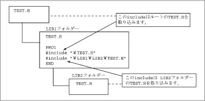
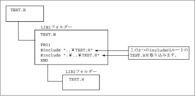

#include
（プリプロセッサステートメント）

プリプロセッサプログラムを取り込みます。

#include "[パス]ファイル名"
#include <[パス]ファイル名>

#include文を置いた場所に、プリプロセッサプログラムファイルを取り込みます。ファイルのパスを省略すると" "の場合は、カレントディレクトリ、システムディレクトリの順で、ファイルを探します。< >の場合は、システムディレクトリだけからファイルを探します。パスをフルパスで指定すると、そのディレクトリだけを探します。
#include文で指定したファイルの中に、さらに#include文を含むことができ、8回までのネストが可能です。
指定可能なファイルの拡張子はHとPACがあります。

フォルダ機能[RC7_Ver.2.2以降]使用時の注意

フォルダ間の区切りを表す'\'の表示は、表示系によって'＼'で表示されます。
例）「ペンダントは'＼'表示」、 「ミニペンダントは'\'表示」
これは表示上だけの違いであり、内部的には同じものとして扱われます。
(1) #include <ファイル名>
システムフォルダを探します。
(2) #include "ファイル名"
include文の記載してあるPACの存在するフォルダ内を探します。

(3) #include"\(フォルダパス)\ファイル名"
ルートからのフォルダパス先のフォルダ内を探します。

(4) #include"..\ファイル名"または #include".\ファイル名"
..\: 1つ上のフォルダ内を探します。
.\ : include文の記載してあるPACのフォルダ内を探します。
例）#include ".\..\TEST.H"
1つ上のTEST.Hを探します。


|
#include "samp1.h"
|
'samp1.hファイルをこの行に展開します。
|